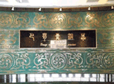
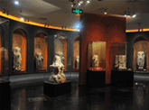
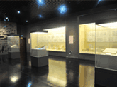
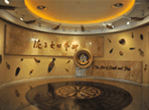
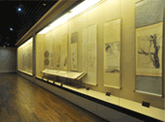

回首页
手机用户
按类别
按馆藏
张大千书画馆
“大风起兮云飞扬，威加海内兮归故乡，安得猛士兮守四方。”这是汉高祖刘邦的《大风…

巴蜀青铜馆
红铜和锡或铅的合金称青铜。作为中国青铜文化重要组成部分，大约在公元前一千六百年左右，巴蜀…

万佛寺石刻馆
万佛寺位于成都市西门外通锦桥，相传建于东汉延熹（公元158—167）年间，是成都著名古刹，从南…

四川汉代陶石艺术馆
两汉时期，是我国历史上一个辉煌的时代。处于封建社会上升时期的中央集权制国家，经济发展、疆…

陶瓷馆
陶瓷对我们来说并不陌生，因为它在我们生活的方方面面随影相伴，它是人类最早的文明成果之一，…

书画馆
中国书画源远流长，在历史发展中形成了鲜明的民族特色，是我国传统民族文化的重要财富。 四…
展览活动
购物
新闻
用户互动
精品鉴赏